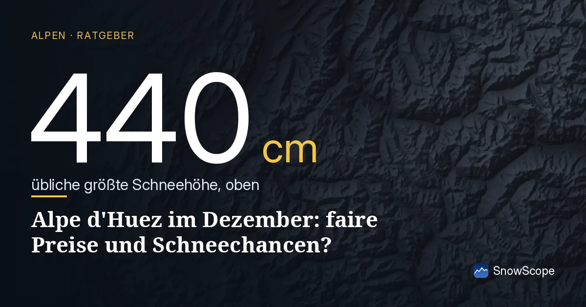

Alpe d'Huez im Dezember: faire Preise und Schneechancen?
Planst du einen Trip für eine Studentengruppe für Dezember 2026 und schaust dir Alpe d'Huez an? Wir haben die offiziellen Ticketpreise und unsere Schneegeschichte von 46 vergangenen Wintern geprüft, um zu sehen, ob dieser berühmte französische Skiort ein gutes Preis-Leistungs-Verhältnis bietet.
Die Live-Schneeprognose für Alpe d'Huez in der SnowScope-AppSchneehöhen, Pulverschnee-Alarme und 3D-Karte, gratis.
Ist der Startpreis für einen großen Skiort fair?
Einen Trip für eine Studentengruppe zu organisieren bedeutet, auf jeden Euro zu achten. In Alpe d'Huez liegt der Startpreis für den 1-Tages-Skipass für Erwachsene für den Winter 2026-27 bei 58,00 EUR. Wenn du länger bleibst, kostet der 6-Tages-Pass für Erwachsene 336,50 EUR.
Das kartierte Skigebiet hat 163 km Pisten und 82 Lifte. Du bekommst viel Gelände für dein Geld, aber lass uns die Schneechancen anschauen, bevor du buchst.

Schneehöhe am Fuß, in der Mitte und am Gipfel im Dezember
Unsere Schneegeschichte von 46 vergangenen Wintern zeigt einen großen Unterschied zwischen dem Fuß der Lifte auf 1.124 m und dem hohen Gipfel auf 3.306 m. Am Fuß beträgt die übliche Dezember-Höhe 14 cm. Am 15. Dezember liegt die übliche Höhe bei 13 cm. In einem schneearmen Dezember sinkt sie auf 0 cm. Der Anteil der Winter mit 30 cm oder mehr am Fuß beträgt nur 4 Prozent vom 1. bis 7. Dezember und steigt auf 28 Prozent vom 22. bis 28. Dezember.
Die Bedingungen verbessern sich schnell, wenn du höher gehst. Auf halber Höhe auf 2.215 m beträgt die übliche Dezember-Höhe 60 cm, und die übliche Höhe am 15. Dezember liegt bei 56 cm. In einem schneearmen Dezember bekommst du 25 cm, während ein schneereicher Dezember 107 cm bringt. Der Anteil der Winter mit 30 cm oder mehr auf halber Höhe liegt in der ersten Woche bei 70 Prozent und erreicht 96 Prozent vom 22. bis 28. Dezember.
Am Gipfel der Lifte auf 3.306 m beträgt die übliche Dezember-Höhe 159 cm, mit 151 cm am 15. Dezember. In einem schneearmen Dezember findest du immer noch 70 cm Schnee, und ein schneereicher Dezember erreicht 278 cm. Der Anteil der Winter mit 30 cm oder mehr liegt hier in der ersten Woche bei 98 Prozent und für den Rest des Monats bei 100 Prozent.
Aktuelle Schneebedingungen und der Zwei-Wochen-Ausblick
Momentan liegt die Schneehöhe am Fuß der Lifte auf 1.124 m bei 0 cm, wobei für die nächsten 7 Tage 0 cm Neuschnee erwartet werden. Auf halber Höhe auf 2.215 m liegen aktuell 0 cm, aber es werden 59 cm Neuschnee in den nächsten 7 Tagen erwartet. Am Gipfel der Lifte auf 3.306 m beträgt die aktuelle Höhe 58 cm, wobei 90 cm in den nächsten 7 Tagen erwartet werden. Für die mittlere Höhe und darüber ergibt der Zwei-Wochen-Ausblick für Neuschnee einen Mittelwert von 92 cm mit einer Spanne von 73 cm bis 110 cm.
Alpe d'Huez oder Les 2 Alpes
Wie schneidet Alpe d'Huez im Vergleich zu Les 2 Alpes auf der anderen Seite des Tals ab? Les 2 Alpes hat 108 km Pisten und 46 Lifte, mit einem niedrigsten Lift auf 1.284 m und dem höchsten Lift auf 3.511 m. Der 6-Tages-Grand-Domaine-Pass für Erwachsene kostet 266,50 EUR, während das flexible 1-Tages-Freedom-Ticket 68,00 EUR kostet.
In unserer Schneegeschichte hat Les 2 Alpes eine übliche Dezember-Höhe von 16 cm an der Basis, 75 cm auf halber Höhe und 176 cm am Gipfel. Am 15. Dezember hat Les 2 Alpes üblicherweise 14 cm an der Basis, 73 cm auf halber Höhe und 160 cm am Gipfel. Beide Skiorte haben oben zuverlässigen Schnee, und beim 6-Tages-Pass ist Les 2 Alpes günstiger: 266,50 EUR gegenüber 336,50 EUR.
Erster Schnee, letzter Winter und langfristige Trends
Am Fuß von Alpe d'Huez ist der 12. November der übliche erste Tag mit dauerhaftem Schnee. Der übliche Saisonhöchststand liegt bei 52 cm, mit 159 üblichen Schneetagen pro Winter. Auf halber Höhe ist der 18. Oktober der übliche erste Tag mit dauerhaftem Schnee, mit einem Saisonhöchststand von 184 cm und 218 Schneetagen. Am Gipfel kommt der Schnee üblicherweise bis zum 30. September und erreicht einen Saisonhöchststand von 440 cm an 232 Schneetagen.
Betrachtet man den langfristigen Trend, lag die Dezember-Durchschnittshöhe auf halber Höhe in den ersten 15 Wintern von 1980-81 bis 1994-95 bei 50 cm und stieg in den letzten 15 Wintern von 2011-12 bis 2025-26 auf 65 cm. Am Gipfel stieg der Durchschnitt zwischen denselben Zeiträumen von 133 cm auf 165 cm. Letzten Winter im Dezember 2025 lag die Durchschnittshöhe bei 10 cm am Fuß, 49 cm auf halber Höhe und 132 cm am Gipfel. Der schneearmste Dezember, der jemals aufgezeichnet wurde, war 0 cm im Jahr 1989-90, während der schneereichste 42 cm im Jahr 1981-82 betrug.
Tipps für Skifahrer
- Buche deinen 6-Tages-Pass für 336,50 EUR auf der offiziellen Website.
- Plane dein Skifahren für die mittlere Höhe und die Gipfelbereiche über 2.215 m im Dezember, da die Basis oft dünn ist mit einer üblichen Höhe von nur 14 cm.
- Reise nach Möglichkeit später im Dezember, da der Anteil der Winter mit 30 cm oder mehr Schnee am Fuß von 4 Prozent in der ersten Woche auf 28 Prozent in der letzten Woche steigt.
- Prüfe immer den lokalen Lawinenlagebericht, bevor du abseits der Pisten fährst, selbst wenn die Gipfelhöhen 159 cm erreichen.
Weitere Karten (externe Seiten)
Quellen und Nachweise
- Alpe d'Huez, official ski pass shop, winter 2026-27 skipass.alpedhuez.com/hiver/
- Les 2 Alpes, official ski pass shop, prices 2026-27 www.skipass-2alpes.com/en/pricing
- Les 2 Alpes, official ski pass shop, opening weekend offer www.skipass-2alpes.com/fr/forfaits/ski
- SnowScope, December snow at three heights and today's snow map snowscope.app/
Zu diesen Zahlen
Schneewerte: SnowScope-Schneehistorie, 46 vergangene Winter (1980-81 bis 2025-26) auf drei Höhen jedes Skigebiets (ein höhenkorrigiertes Modell der Vergangenheit: eine Schätzung für eine Fläche, keine Messungen des Skigebiets); Dezemberwerte aus den täglichen Schneehöhen dieser Winter. Aktueller Schnee und Zwei-Wochen-Ausblick: SnowScope-Prognosen (Ausblick aus ECMWF und GFS, eine Spanne, kein Versprechen). Lifte und Pisten: OpenSkiMap-Kartierung. Preise: die offiziellen Seiten unten, gelesen am 2026-11-13; Preise können sich ändern, vor der Buchung prüfen.
Offizielle Lawinenlageberichte: Météo-France – Bulletin d'estimation du risque d'avalanche
Diesen Bericht zitieren
Für Forschung, Lehre oder Presse: Zahlen und Grafiken sind unter CC BY 4.0 mit dieser Quellenangabe frei nutzbar.
SnowScope (2026), Alpe d'Huez im Dezember: faire Preise und Schneechancen?, https://snowscope.app/blog/de/2026/11/alpe-dhuez-december-ski-starting-price-snow-2026.html, abgerufen am 2026-11-14
SnowScope (Atlas Labs). (2026, November 14). Alpe d'Huez im Dezember: faire Preise und Schneechancen?. SnowScope snow reports. https://snowscope.app/blog/de/2026/11/alpe-dhuez-december-ski-starting-price-snow-2026.html
BibTeX
@misc{snowscope2026alpedhuezdecemberskistar,
author = {{SnowScope (Atlas Labs)}},
title = {Alpe d'Huez im Dezember: faire Preise und Schneechancen?},
year = {2026},
month = nov,
howpublished = {\url{https://snowscope.app/blog/de/2026/11/alpe-dhuez-december-ski-starting-price-snow-2026.html}},
note = {Published 2026-11-14 18:11 UTC; accessed 2026-11-14}
}· CC BY 4.0 · Methoden, Daten und Werkzeuge →
Alpe d'Huez: Schnee und Temperatur nach Höhe, dieser Winter vs letzter (Werkzeuge) →
Alpe d'Huez folgen
Gratis: eine Nachricht, wenn Neuschnee kommt, und jeden Morgen die Vorhersage.